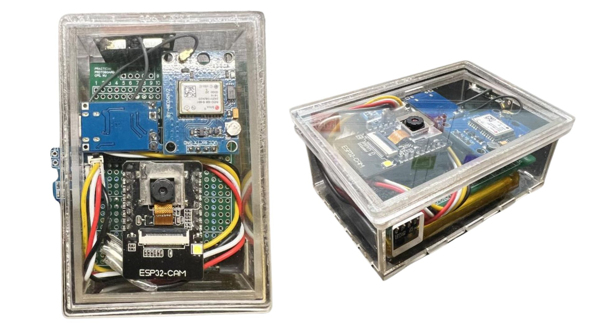

การประเมินความสามารถในการรับรู้และควบคุมอุปกรณ์ Lifelogging
การทดสอบนี้มีวัตถุประสงค์เพื่อศึกษาความเข้าใจของผู้ใช้ต่อการทำงานของอุปกรณ์ Lifelogging โดยแบ่งออกเป็น 2 ส่วน (Scenario):
คำตอบของคุณจะถูกนำไปใช้ในการศึกษาและวิเคราะห์การทดลองเท่านั้น และจะไม่นำข้อมูลไปเปิดเผยหรือระบุตัวตนของคุณ
รูปภาพนี้คืออุปกรณ์ Lifelogging ที่ใช้ในการทดลอง